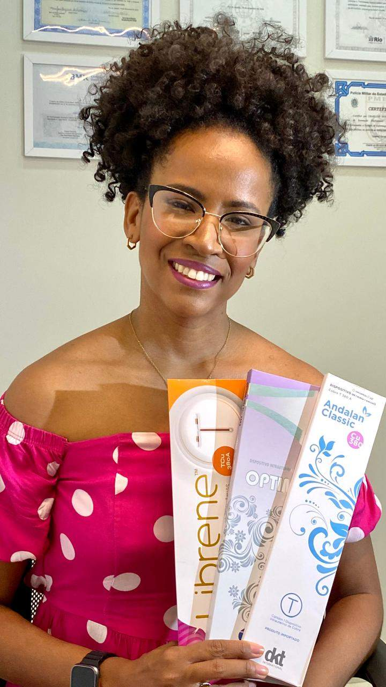

"Atendimento acolhedor e sem pressa, com todas as minhas dúvidas sanadas. Recomendo de olhos fechados."
Saúde da Mulher
Agende sua consulta pelo WhatsAppAgendar consulta
Cuidado completo para a saúde da mulher.
Você encontra atendimento especializado em saúde da mulher, com foco na prevenção, no bem-estar e no cuidado humanizado.
Atendimento Humanizado
Enfermeira Especialista
Mais de 300 pacientes atendidas
Cuidado realEscuta em cada consulta
Ambiente seguroSigilo e acolhimento

Sobre a Clínica
Um cuidado pensado para você.
Sabemos que cuidar da saúde exige confiança. Por isso, você é recebida com atenção, respeito e escuta em cada etapa do seu atendimento.
Você conta com uma experiência segura e tranquila, orientações claras e procedimentos realizados por profissionais qualificados.
Prevenir é a melhor forma de cuidar da sua saúde — e você caminha essa jornada com alguém ao seu lado.
Serviços
O que oferecemos?
Você recebe cuidados completos para a sua saúde, com técnica, segurança e acolhimento.
Saúde da Mulher
Consulta de Enfermagem Ginecológica
Avaliação, orientações e acompanhamento voltados à saúde íntima e ao bem-estar feminino.
Inserção e Remoção de DIU
Procedimentos realizados com segurança para DIU de Cobre, Prata e Hormonal.
Inserção e Remoção de Implanon
Método contraceptivo de longa duração realizado por profissionais capacitados.
Preventivo (Papanicolau)
Exame essencial para a prevenção e o acompanhamento da saúde do colo do útero.
Investigação de ISTs
Avaliação, orientação e acompanhamento com total sigilo e acolhimento.
Consulta em Saúde da Mulher
Atendimento personalizado para prevenção, orientação e cuidados contínuos.
Cuidados de Enfermagem Geral
Troca de Sonda Vesical
Procedimento realizado com técnica, segurança e atenção ao conforto da paciente.
Avaliação e Tratamento de Feridas Crônicas
Acompanhamento especializado para favorecer uma recuperação adequada.
Cuidados com Pacientes Ostomizados
Orientação e assistência para promover mais conforto e qualidade de vida.
Precisa de orientação ou deseja agendar seu atendimento?
Nossa equipe está pronta para esclarecer suas dúvidas e ajudar você a escolher o melhor atendimento.
Falar com nossa equipeQuem confia, recomenda.
Veja o que nossas pacientes dizem sobre a experiência de ser atendida na Clínica do Bem.
"A Dra. Charlene explicou tudo com calma e atenção, o que me deixou muito confortável. Adorei!"
"Atendimento incrível e atencioso, procedimento indolor. Pessoas maravilhosas — recomendo muito!"
"Atendimento espetacular, com tudo bem explicado. Procedimento tranquilo, seguro e sem dores."
"A Dra. Charlene é incrível: acolhedora, explica tudo com calma, num espaço maravilhoso."
"Cheguei ansiosa e cheia de dúvidas; a equipe foi cuidadosa, humana e respeitosa do início ao fim."
Dúvidas Frequentes
Perguntas frequentes
Localização
Prontos para receber você.
Visite a Clínica do Bem e conte com um ambiente preparado para oferecer conforto, segurança e um atendimento acolhedor.
Endereço
Av. Garibaldi - Itaipu A
Foz do Iguaçu - PR, 85861-550, Brasil
Horário de Atendimento
Segunda a Sexta: 08h às 18h
Sábado: 08h às 12h
Vamos cuidar da sua saúde?
Um atendimento acolhedor, profissional e pensado para o seu bem-estar está a apenas uma mensagem de distância.